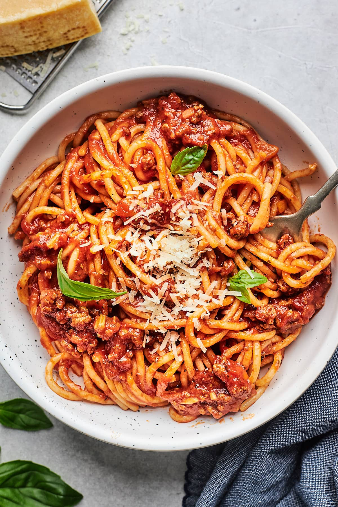

Spaghetti Recipes

Description
This classic spaghetti recipe brings a comforting, hearty meal to your
table with its rich and savory meat sauce. Start by browning lean ground
beef or turkey in olive oil, then add onions and garlic for a fragrant
base. Tomato paste, oregano, and a hint of red pepper flakes elevate the
flavor profile, while a splash of water or wine helps to deglaze the pot,
capturing every bit of deliciousness. Crushed tomatoes blend seamlessly
into the sauce, which simmers to perfection, allowing the flavors to meld
together beautifully.
Ingredients
- 1 pound (450g) dried spaghetti
- 1 pound (450g) lean ground meat like ground beef or ground turkey
- 3 tablespoons olive oil
- 1 cup (130g) chopped onion
- 3 garlic cloves, minced (about 1 tablespoon)
- 2 tablespoons tomato paste
- 1/2 teaspoon dried oregano
- Pinch crushed red pepper flakes
- 1 cup water, broth, or dry red wine
- 1 (28oz) can crushed tomatoes
- Salt and fresh ground black pepper
- Handful of fresh basil leaves, plus more for serving
- Parmesan cheese, for serving
Directions
- Heat the oil in a large pot over medium-high heat (we use a Dutch oven).
- Add the meat and cook until browned, about 8 minutes. Use a wooden spoon to break the meat into smaller crumbles as it cooks.
- Add the onions and cook, stirring occasionally, until softened, about 5 minutes.
- Stir in the garlic, tomato paste, oregano, and red pepper flakes, and cook, stirring continuously for about 1 minute.
- Pour in the water and use a wooden spoon to scrape up any bits of meat or onion stuck to the bottom of the pot.
- Stir in the tomatoes, 3/4 teaspoon of salt, and a generous pinch of black pepper.
- Bring the sauce to a low simmer. Cook uncovered for 25 minutes, stirring and tasting occasionally to adjust the seasoning as needed.
- About 15 minutes before the sauce is done, bring a large pot of salted water to a boil. Cook the pasta according to the package directions, checking for doneness a minute or two before the suggested cooking time.
- Remove the sauce from the heat and stir in the basil. Toss in the cooked pasta and let it absorb some of the sauce for a minute. Toss again and serve with grated Parmesan cheese on top.